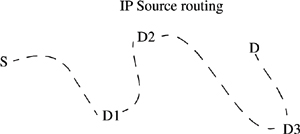

Networking Security Networking Security Networking Security Security Networking Security Networking Security Networking Charlie Kaufman Radia Perlman Mike Speciner Prentice Hall Network Security: Private Communication in a Public World, Second Edition
17.3. AH (Authentication Header)
The AH header provides authentication only (not encryption), and is defined in RFC 2402. It looks like
# octets | | 1 | next header | 1 | payload length | 2 | unused | 4 | SPI (Security Parameter Index) | 4 | sequence number | variable | authentication data |
This is the same format as IPv6 extension headers, which all start with NEXT HEADER and PAYLOAD LENGTH (which gives the length of the AH header), except, as we said in the previous section, AH's PAYLOAD LENGTH is in different units than the equivalent field in an IPv6 extension header. AH is intended not only to protect the data, but the IP header as well. In IPv4, the AH header must be a multiple of 32 bits, and in IPv6 it must be a multiple of 64 bits. So the AUTHENTICATION DATA field must be an appropriate size to make the header size be the right length.
Some integrity checks require the data to be a multiple of some block size. If the data is not a multiple of the block size, then AH is computed as if the data were padded to the proper length with 0s, but the 0s are not transmitted.
The fields in AH are
NEXT HEADER. Same as PROTOCOL field in IPv4. For example, if TCP follows the AH header, then NEXT HEADER is 6. PAYLOAD LENGTH. The size of the AH header in 32-bit chunks, not counting the first 8 octets. SPI. Discussed in §17.1.1 Security Associations. SEQUENCE NUMBER. The sequence number has nothing to do with TCP's sequence number. This sequence number is assigned by AH and used so that AH can recognize replayed packets and discard them. So, for example, if TCP retransmits a packet, AH will just treat it like a new packet and give it the next sequence number. AH will not know (or care) that this is a retransmitted TCP packet. AUTHENTICATION DATA. This is the cryptographic integrity check on the data.
17.3.1. Mutable, Immutable
Some fields in the IP header get modified by routers, so they can't be included in AH's end-to-end integrity check. For example, the TTL field must be decremented by every router. The immutable fields are the ones that the AH designers do not believe should ever legitimately be modified in transit.
The IPv4 AH defines the mutable fields as TYPE OF SERVICE, FLAGS, FRAGMENT OFFSET, TIME TO LIVE, and HEADER CHECKSUM.
Some of the choices for which fields are considered mutable are surprising. As envisioned by the original IP designers, TYPE OF SERVICE would be an immutable quantity, and indeed worthy of protecting. It contained the desired routing metric and priority chosen by the source. But that use of the TYPE OF SERVICE field as originally defined in the IP header did not prove to be useful, and now network administrators are playing around with various uses of the field, such as categorizing the packet when it enters their domain. So routers today want to be free to modify that field.
Why is PAYLOAD LENGTH considered immutable? If a packet requires fragmentation, the PAYLOAD LENGTH must be modified (since PAYLOAD LENGTH is the length of the data in this fragment, not the original size of the packet as launched by the source), so it would seem like it should be considered mutable. However, the reason it can be considered immutable is that IP at the destination must reassemble the packet before AH can verify the integrity check, in which case although PAYLOAD LENGTH was modified en route, it has been restored to its original value before the AH header is processed. Theoretically the same logic would apply to FRAGMENT OFFSET, which should be set to 0 when launched by the source, and might be modified by routers along the path if the packet is fragmented, but will be restored to 0 again after the packet is reassembled at the destination, and before the AH header is processed. But AH has chosen to define FRAGMENT OFFSET as a mutable field, and therefore not covered by the AH integrity check. Not that it matters, since as we said earlier, there's no reason to bother protecting any of the IP header. Note that since FRAGMENT OFFSET is always 0 when the AH header is processed, whether it's immutable or not is irrelevant.
In IPv6 the mutable fields are TYPE OF SERVICE (because routers want to be able to modify it), FLOW LABEL (because the IPv6 designers still don't know what to do with the field, so maybe whatever they'll decide to use it for will require it to change en route), and HOP LIMIT (which is decremented by each router along the path).
17.3.2. Mutable but Predictable
The DESTINATION ADDRESS is not quite considered immutable, but it is included in the AH integrity check, since there is one situation in which it might be modified in a way considered legitimate by the AH designers (as opposed to being modified by a NAT box, which the AH designers do not consider legitimate). This case is when the source specifies source routing as an option. The way source routing works in IP is that the source chooses a path consisting of a sequence of intermediate destinations to be visited in order, say D1, D2, D3, D, where D is the ultimate destination. In IPv4 there is an option called "source routing" that would include these intermediate destinations. In IPv6 it's an extension header called the "route header", which is the same idea. When source routing is specified, the DESTINATION ADDRESS in the IP header (in both v4 and v6) specifies the next destination in the source route header, not the ultimate destination. So DESTINATION ADDRESS is clearly mutable, since in this example it would start out, when launched by S, as D1, get overwritten as D2 once it reached D1, get overwritten as D3 once it reached D2, and ultimately wind up at the destination as D.

But the source knows what the DESTINATION ADDRESS will look like when it arrives at D (the DESTINATION ADDRESS field will specify D). So even though S launches it with DESTINATION ADDRESS set to D1, S computes the AH integrity check as though DESTINATION ADDRESS were set to D. Then when D evaluates the AH, it will compute properly as received.
So fields that are mutable but predictable are included in the AH integrity check, but with the values they will have when received at the other end. The only one listed in the AH spec is the DESTINATION ADDRESS, but in theory the TOTAL LENGTH field in IPv4 should be listed as mutable but predictable rather than immutable, since if the packet were fragmented, that field would be modified en route, but would be restored by IP at the destination before IPsec at the destination saw the packet. But it isn't a problem since immutable and mutable-but-predictable fields are treated the same way at the destination.
|